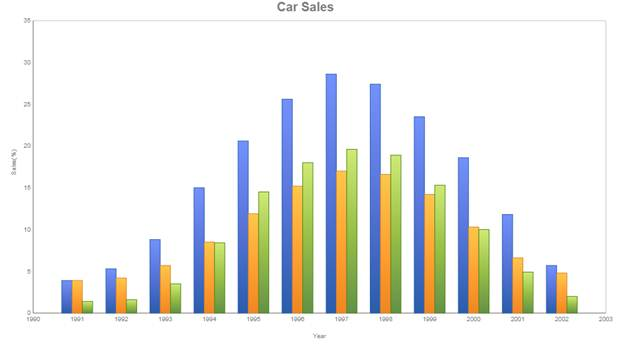

Column charts are the most commonly used type of chart. Displayed in vertical bars (called columns), they depict the different values of one or more items. Points from adjacent series are drawn as bars next to each other. They are ideal for showing the variations in the value of an item over time.
A very similar chart type is the bar chart in which the bars are rendered horizontally.
Chart Details
|
Number of Y Values per Point |
1 |
|
Number of Series |
One or more |
|
Cannot be Combined with |
Pie chart |
Column series can be added to the chart using the following code.
|
[C#] Series series = new Series("Toyoto");
this.ChartAdv1.Axes["PrimaryX"].RangeType = RangeType.Set; this.ChartAdv1.Axes["PrimaryX"].ValueType = ChartAxisValueType.Double; this.ChartAdv1.Axes["PrimaryX"].Range = new MinMaxInfo() { Start = 1990, End = 2003, Interval = 1 }; this.ChartAdv1.Size = new System.Drawing.Size(1000, 600);
series.Points.Add(1991, 3.9); series.Points.Add(1992, 5.3); series.Points.Add(1993, 8.8); . . .
series.Type = SeriesType.Column; this.ChartAdv1.Series.Add(series);
Series series1 = new Series("Berlin"); series1.Points.Add(1991, 3.9); series1.Points.Add(1992, 4.2); series1.Points.Add(1993, 5.7); . . .
series1.Type = SeriesType.Column; this.ChartAdv1.Series.Add(series1);
Series series2 = new Series("London"); series2.Points.Add(1991, 1.4); series2.Points.Add(1992, 1.6); series2.Points.Add(1993, 3.5);
. . .
series2.Type = SeriesType.Column;
this.ChartAdv1.Series.Add(series2); this.ChartAdv1.ElementSpacing = 10;
|
|
[VB] Dim series As Series = New Series("Toyoto")
Me.ChartAdv1.Axes("PrimaryX").RangeType = RangeType.Set Me.ChartAdv1.Axes("PrimaryX").ValueType = ChartAxisValueType.Double Me.ChartAdv1.Axes("PrimaryX").Range = New MinMaxInfo() With {.Start = 1990, .End = 2003, .Interval = 1}
series.Points.Add(1991, 3.9) series.Points.Add(1992, 5.3) series.Points.Add(1993, 8.8)
. . .
series.Type = SeriesType.Column Me.ChartAdv1.Series.Add(series)
Dim series1 As Series = New Series("Berlin") series1.Points.Add(1991, 3.9) series1.Points.Add(1992, 4.2) series1.Points.Add(1993, 5.7)
. . .
series1.Type = SeriesType.Column Me.ChartAdv1.Series.Add(series1)
Dim series2 As Series = New Series("London") series2.Points.Add(1991, 1.4) series2.Points.Add(1992, 1.6) series2.Points.Add(1993, 3.5)
. . . series2.Type = SeriesType.Column
Me.ChartAdv1.Series.Add(series2) Me.ChartAdv1.ElementSpacing = 10
|

Figure 15: Cloumn Chart Showing Car Sales